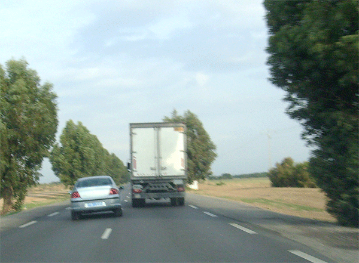
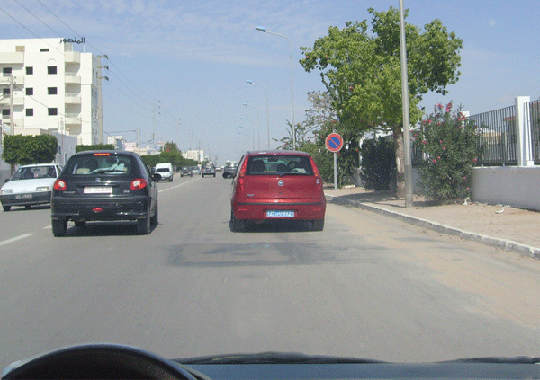
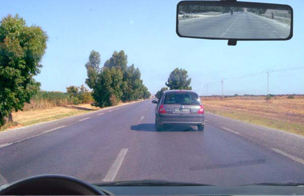
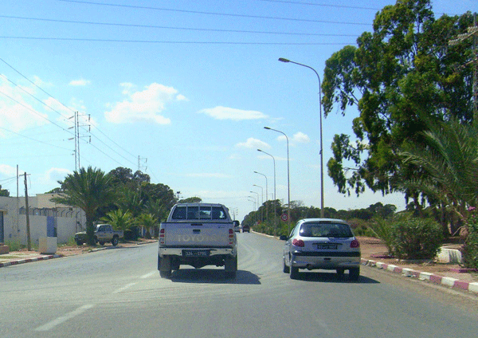
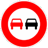
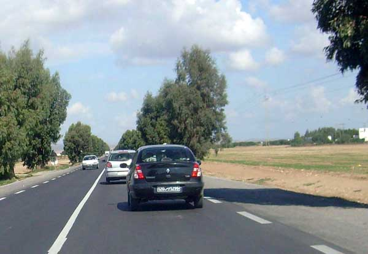

كما هو الشأن عند الاقتراب من مفترق طرقات ، يجب على السائق مضاعفة الانتباه والحذر عند القيام بعملية المجاوزة،
فالمجاوزة التي تشكل خطرا على الجولان يمكن أن تؤدي إلى حادث مرور لذلك يجب اتخاذ الاحتياطات اللازمة عند الشروع في هذه المناورة لإنهائها بكل أمان .
وسوف تتعرف من خلال هذا الباب على كيفية القيام بعملية المجاوزة والحالات التي تمنع فيها المجاوزة.
يجب على كل سائق يريد القيام بعملية المجاوزة أن يتأكد من قدرته على القيام بذلك دون خطر.
المبدأ العام
تكون عملية المجاوزة على اليسار.


كيف يمكن القيام بالمجاوزة
يجب على كل سائق يريد القيام بعملية مجاوزة أن يتأكد من قدرته على القيام بذلك بدون خطر وعليه خاصة اخذ الاحتياطات التالية :
قبل المجاوزة
-أن يتأكد من عدم وجود حالة من حالات منع المجاوزة أي غياب علامات عمودية وسطحية تمنع المجاوزة
-كما يجب أن يأخذ في الاعتبار عرض المعبد وشكله والعوامل الطبيعية مثل الضباب والمطر والرياح الجانبية
-أن يتأكد من أن السبيل شاغر على مسافة كافية تمكن من القيام بهذه العملية بدون خطر
-أن يتأكد أن السائق المتقدم عليه والسائق الذي يتبعه لم يشرعا في أي عمل من أعمال المجاوزة
-أن يتأكد من إمكانية الرجوع إلى السبيل العادي للجولان بدون خطر
-الإعلان عن القيام بعملية المجاوزة وذلك بتشغيل أضواء تغيير الاتجاه .
في هذه الحالة كل الظروف متوفرة للقيام بعملية المجاوزة : الخط المتقطع بوسط المعبد يسمح بالمجاوزة .
الرؤية من الأمام واضحة .
لا وجود لعربة أخرى بصدد القيام بعملية مجاوزة.
يمكنني إذا الشروع في عملية المجاوزة بعد تشغيل أضواء تغيير الاتجاه.

أثناء وبعد المجاوزة
-أن يترك مسافة جانبية كافية مع الزيادة في السرعة
-من الأفضل أن لا يقل فارق السرعة عن 20 كم في الساعة حتى تتم هذه المناورة في وقت قصير
-إذا ظهرت العربة التي وقع تجاوزها في المرآة العاكسة للرؤيا الداخلية تبدأ عملية الرجوع إلى الصف الأصلي بكل أمان وذلك بتشغيل أضواء تغيير الاتجاه من الجهة اليمنى .
يجب على كل سائق يراد تجاوزه أن ينحاز إلى أقصى اليمين و لا يزيد في سرعته

حالات منع المجاوزة
تحجر مجاوزة العربات غير الدراجات والدراجات النارية ذات العجلتين :
-عند الاقتراب من قمم المرتفعات
-بالمنعرجات
-عند المرور على الجسور الضيقة التي لا تشتمل على أكثر من سبيلين
-في جميع الحالات التي تحجر فيها المجاوزة بواسطة علامات أو رسوم الطريق
-في تقاطع الطرقات مع السكك الحديدية غير المجهزة بحواجز أو نصف حواجز
-في تقاطع الطرقات إلا بالنسبة إلى السائقين الذين يسيرون في سبل ذات أولوية ومشار إليها بعلامات.
مثال عدد 1

بداية من هذه العلامة تمنع المجاوزة على كل العربات ذات المحرك باستثناء العربات ذات العجلتين .
مثال عدد 2
يمنع الخط المتواصل كل مجاوزة أو اجتيازه من طرف كل سائق.
